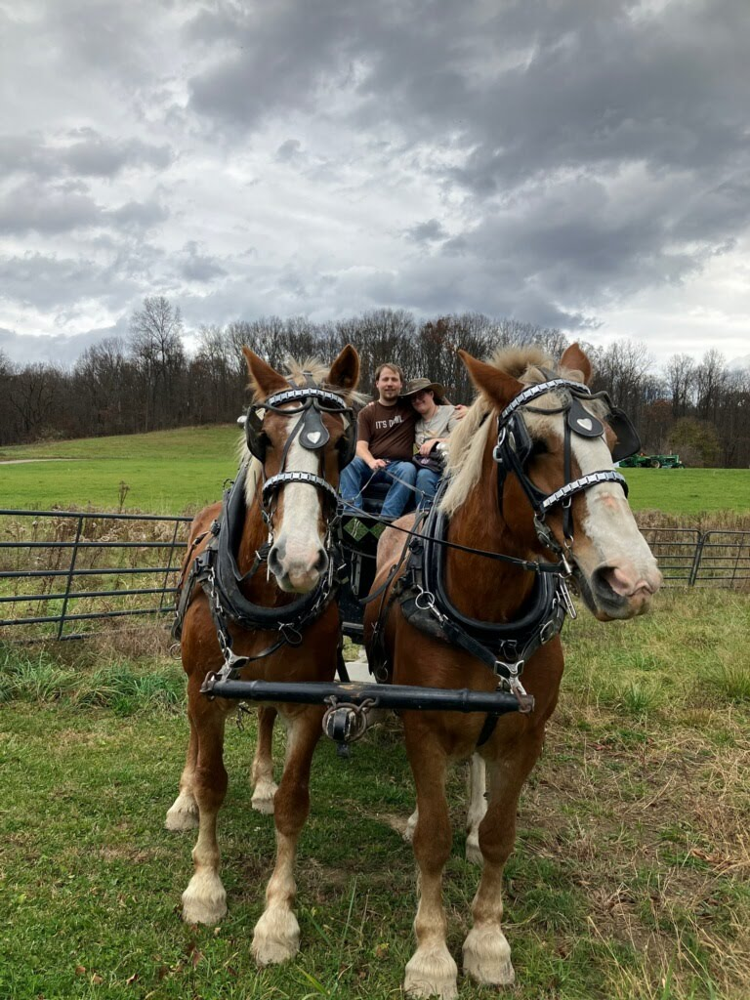
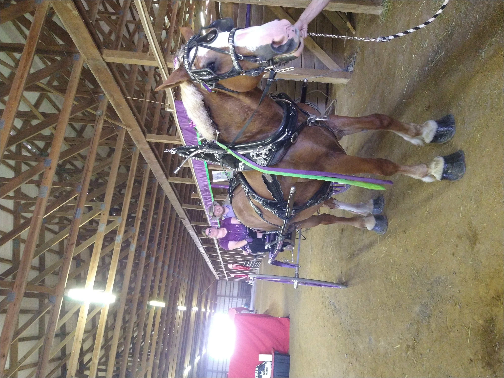
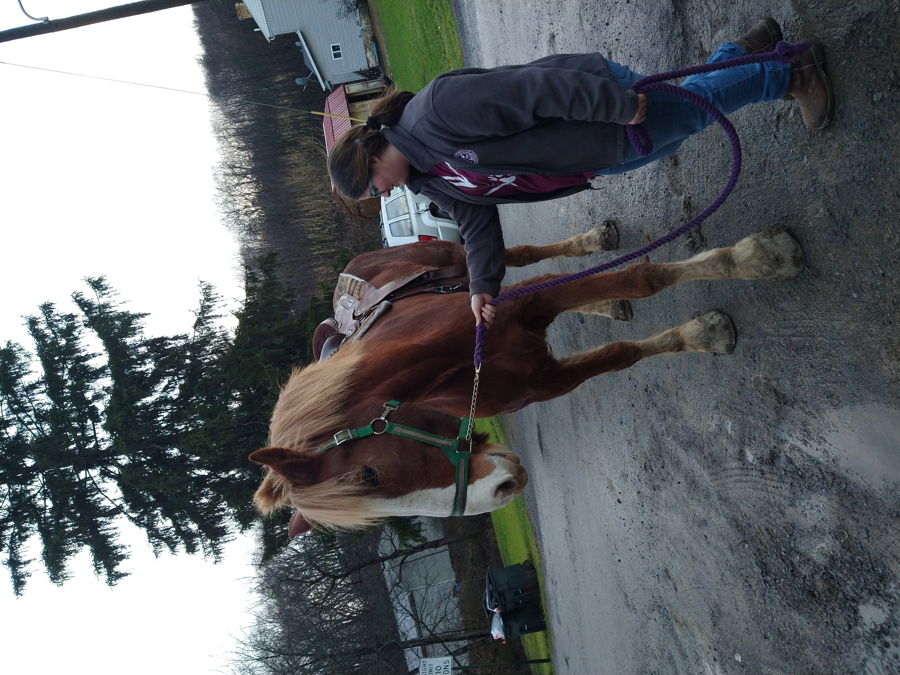
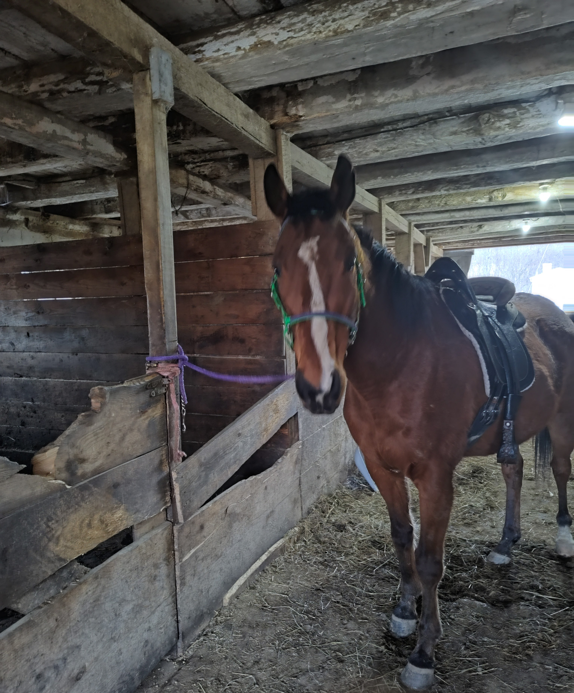

Horse Photos
One of my favorite hobbies outside of the tech world is hanging out with horses. Here are some of my favorite higlights:
My first time driving horses, accompanied by my boyfriend! Bess (on the right) and Pansy (on the left) were very good for me.
My first horse driving competition. I took 3rd! Bess is such a good girl.
This is what happens when the Belgian you're most likely to ride is also the biggest in the barn. This is Bones.
This is Reno. He's a Thoroughbred. And while he may belong to my boyfriend's family, he is absolutely ny baby. And the horse I get to ride.

If you ask your boyfriend to go riding with you, and you only have one horse, he's going to want to ride too. At least he loves Reno as much as I do!!